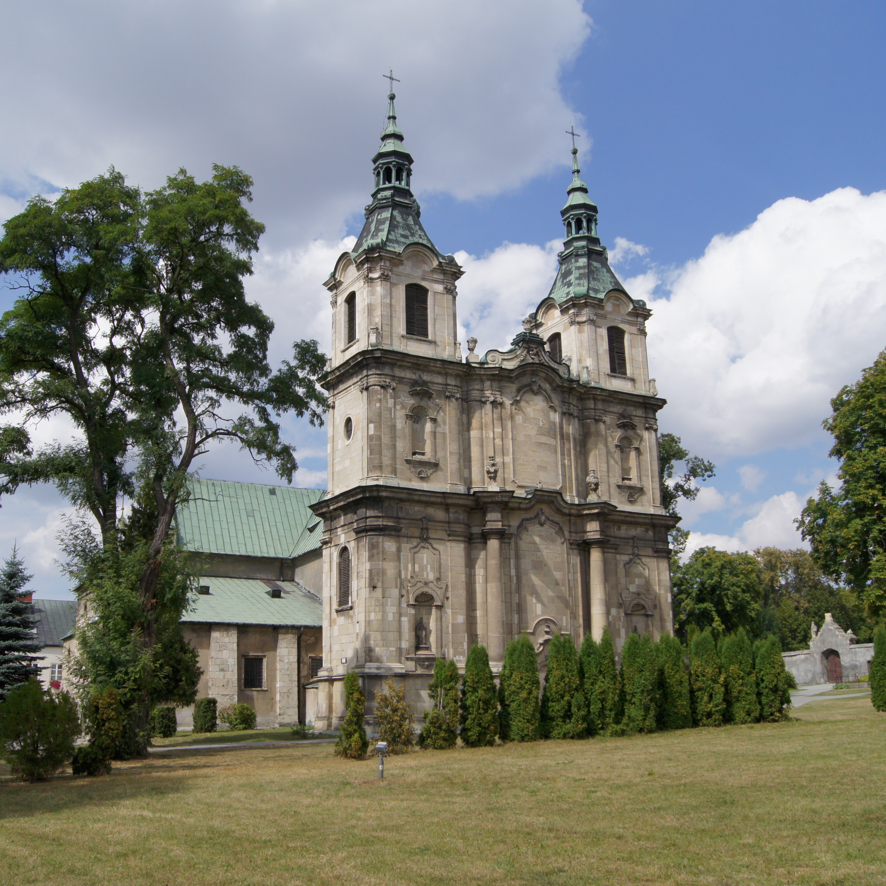

Archiopactwo Cystersów w Jędrzejowie
Ufundowany w 1140 roku klasztor cystersów w Jędrzejowie. Na początku XII w. w pobliżu źródeł Białej Nidy, nad Brzeźnicą (dziś tereny Jędrzejowa) został wzniesiony przez Jaksów-Gryfitów rodowy kościół św. Wojciecha wraz z rezydencją. Kościół ten konsekrował biskup krakowski Maurus, a uposażył jego następca Radost Gaudensjusz herbu Poraj.